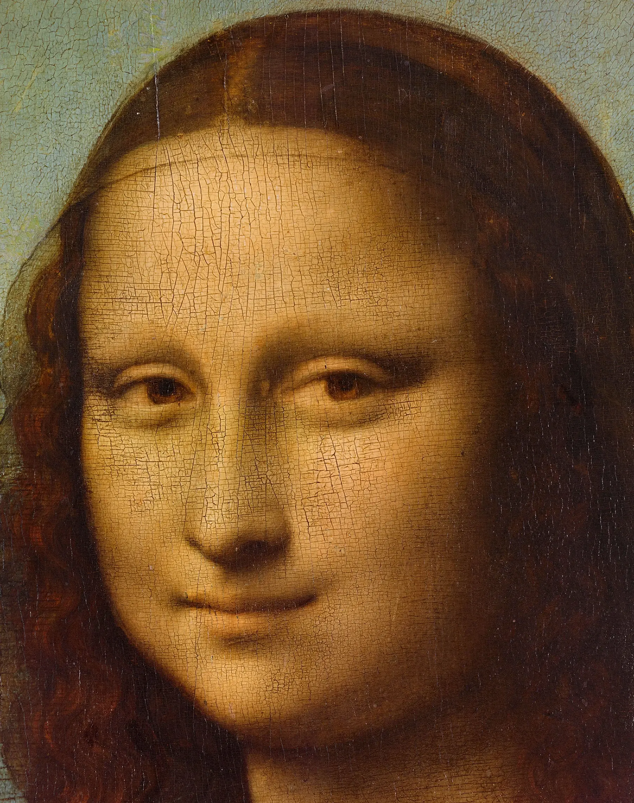
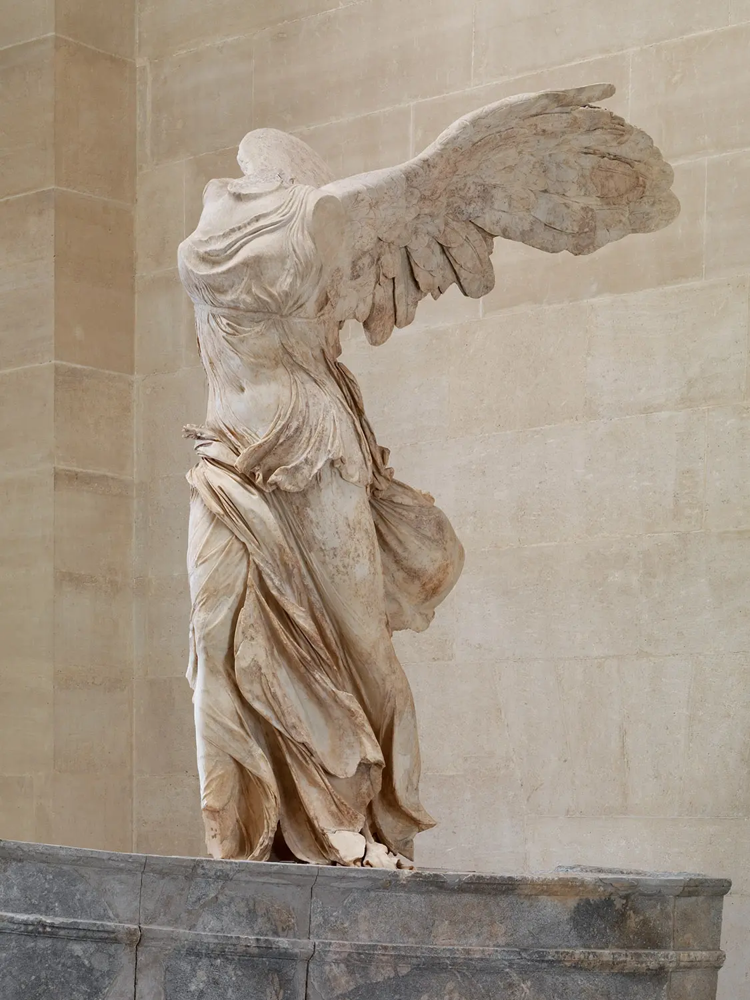
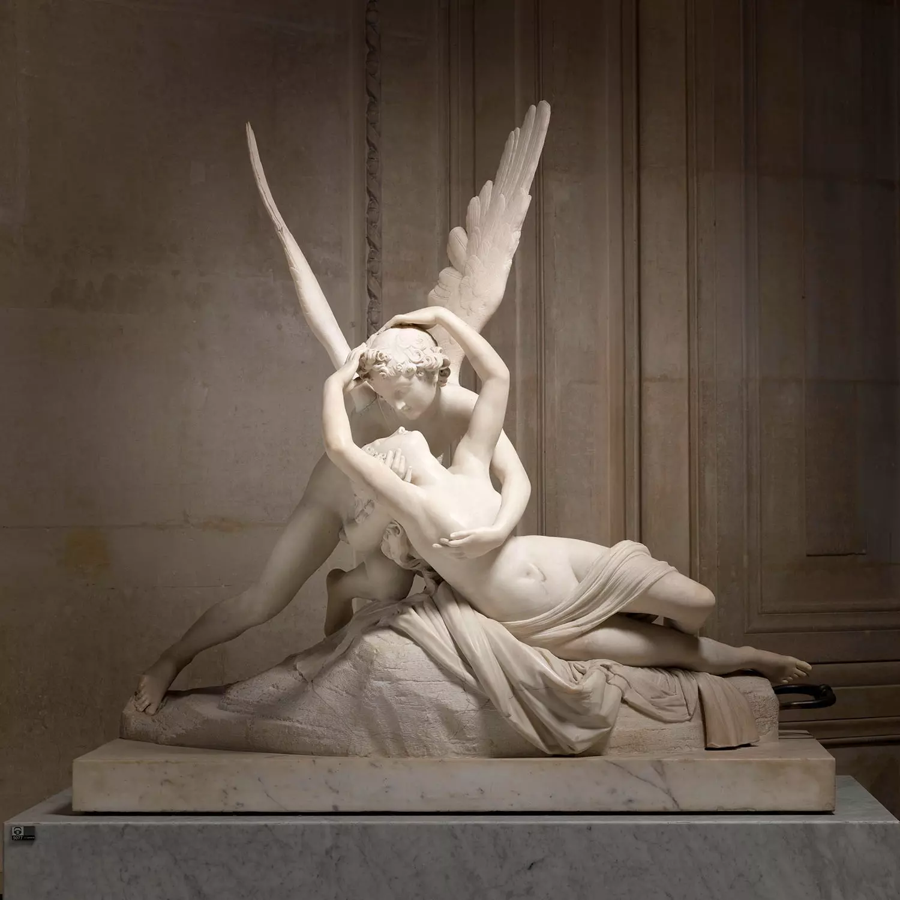
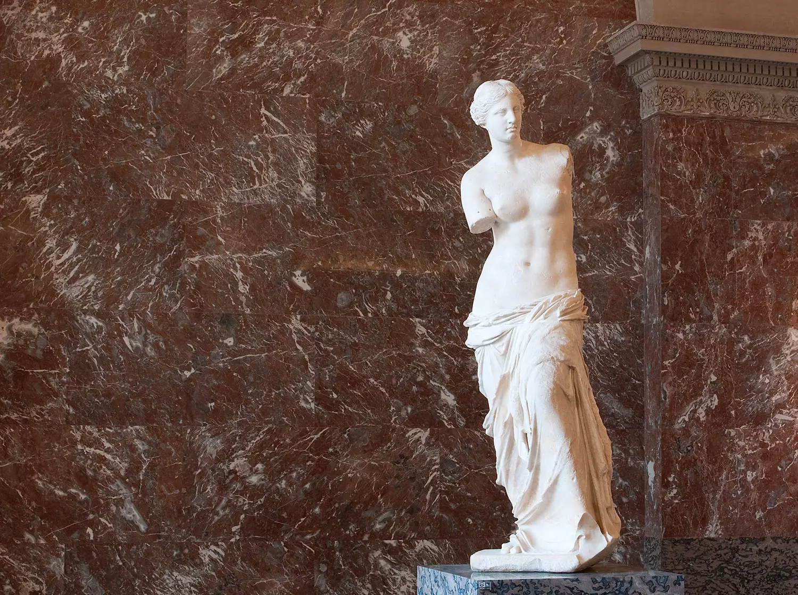
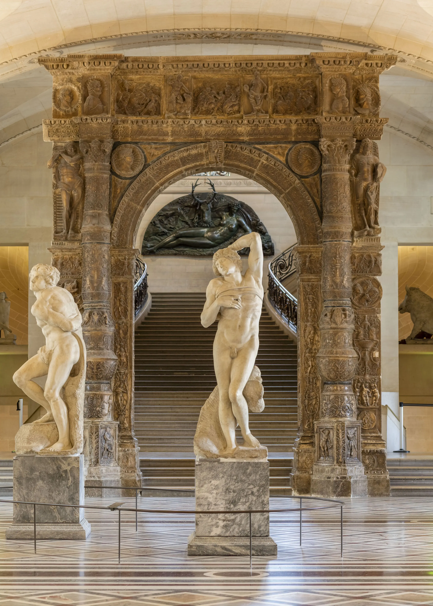

O Museu do Louvre, localizado em Paris, é um dos maiores e mais famosos museus do mundo,
recebendo milhões de visitantes todos os anos. O edifício, que foi originalmente
construído como uma fortaleza no século XII, abriga uma vasta coleção de arte e
antiguidades que abrange desde a pré-história até o século XXI.
Entre as obras mais famosas do Louvre, destaca-se a Mona Lisa, de Leonardo da Vinci.
Esta pintura do século XVI, que retrata uma mulher com um sorriso enigmático, é uma
das imagens mais reconhecidas do mundo da arte.
Outra obra famosa é a Vênus de Milo, uma estátua de mármore que representa a deusa
grega do amor e da beleza. A escultura, que data do século II a.C., é considerada uma
das obras mais importantes da arte grega antiga.
O Louvre também é famoso por sua coleção de antiguidades egípcias, que inclui a
Esfinge de Tanis, uma escultura colossal que representa a criatura mitológica com
corpo de leão e cabeça humana.
Outras obras de destaque incluem a Liberdade Guiando o Povo, de Eugène Delacroix,
que representa uma figura feminina personificando a liberdade liderando um levante
popular em Paris em 1830, e a Balsa da Medusa, uma pintura de Théodore Géricault
que retrata os sobreviventes do naufrágio da fragata francesa Méduse em 1816.
Além disso, o Louvre abriga uma vasta coleção de artefatos do Oriente Médio,
incluindo objetos da antiga Mesopotâmia, bem como uma coleção de arte islâmica
que abrange desde o século VII até o século XIX.
O Museu do Louvre é, sem dúvida, um tesouro inestimável para a história da
arte e da humanidade, oferecendo uma experiência cultural única e inesquecível.
Não faltam bons motivos para visitar o Louvre! Tantas obras de arte para descobrir neste fabuloso museu que já foi um palácio! Portanto, planeje sua visita com antecedência para aproveitá-la ao máximo. Por que não escolher uma de nossas trilhas para visitantes para seguir um passeio temático? E quando você precisa de uma pausa, que lugar melhor do que os jardins tranquilos do museu?




